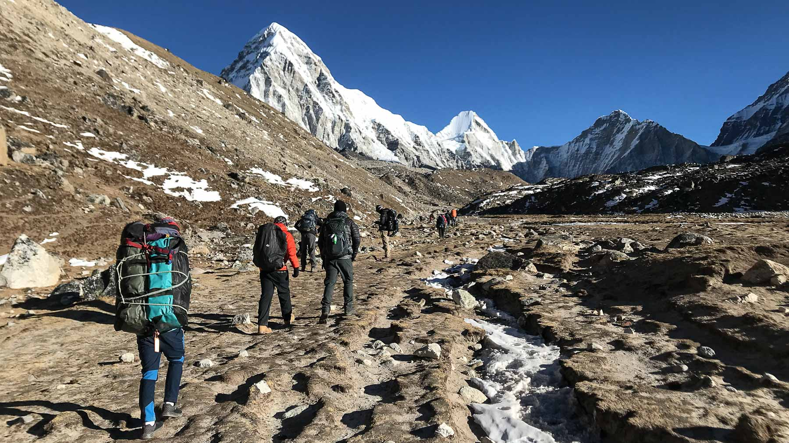

Travel far enough, you meet yourself.
Inspired by | David Mitchell
Top Attractive Places in Kathmandu
1. Durban Square
Temple

Kathmandu Durbar Square, also known as Basantapur Durbar and Hanuman Dhoka, is an old durbar square in Kathmandu's city center. In the heart of old Kathmandu city, Basantapur never fails to impress first time visitors with its intricate wood carvings and rich history. Hanuman Dhoka was built during the Licchavi period (4th to 8th centuries AD), and King Pratap Malla extended the property significantly in the 17th century. With the highest concentration of old structures, the square is home to several palaces, courtyards, and temples. It is also known as "the Museum of Temples" because there are over 50 temples in the square. Handicraft shops may be found in the courtyards around Gaddi Baithak, where you can see a variety of attractive purchasable handicrafts. Among the 50 temples that lie in the vicinity, lies the temple of the titular deity, Taleju Bhawani. The Durbar is divided into two courtyards, the outer Kasthamandap, Kumari Ghar, and Shiva-Parvati Temple, and the inner section consisting of Hanuman Dhoka and the main palace. Some floors have been converted to museums dedicated to three generations of Shah kings of Nepal. Most parts of the palace premises are open to tourists throughout the week.
2. Chandragiri Hill
Rope way

Chandragiri Cable Car is a gondola lift transportation system located in Chandragiri Municipality, Nepal. Opened in 2016, the Chandragiri Cable Car runs from Thankot to Chandragiri hills. The 2.4km (9,095ft) line has two stations. The cable car system consists of 38 gondolas that can carry 1,000 people per hour. Bhaleshwor Mahadev temple is situated at the top of Chandragiri hills. The 2.4 km cable car ride takes 9 minutes to reach the Chandragiri Hills’ top station. A cabin accommodates 8 passengers. A child above 3 feet of height requires a ticket.Chandragiri Hills Ltd is a Hospitality Company which operates cable car, restaurants & bar,conference center and branded shops in Thankot Kathmandu,with its upcoming attraction being amusement park, boutique resort, paragliding, zip flying and many more.The cable car ride is as thrilling as it is mesmerizing and as luxurious as is affordable. From an altitude of 1,550m, the cherry red cable car takes visitors to a dramatic 2,551m in just about 9-13 minutes — a major highlight on its own for anyone visiting Chandragiri Hills. During this short ride, passengers are privy to the view of the valley below, the rolling emerald hills, and the snow-capped Himalayas
3. Thamel
Market

The most well-known and active tourist destination in Nepal is Thamel, which is situated in the city’s center. This vibrant neighborhood is recognized for its short lanes filled with a diverse selection of stores, vendors, restaurants, and pubs. For more than a century, Thamel has been the hub of Kathmandu’s tourism industry and is a must-see location for visitors to Nepal. Since the hippie era, when many artists used to travel to Nepal using Hippie Trail and used to stay for weeks in Thamel, Thamel has been the epicenter of the tourism industry in Kathmandu. The Kathmandu valley’s main tourist destination is there. Thamel is renowned for its winding lanes crammed with a variety of shops and street sellers. Food, fresh produce, pastries, walking and trekking equipment, music, DVDs, handicrafts, souvenirs, woolen goods, and clothing are among the often sold things. Along the streets are also travel agencies, little grocery stores, low-cost hotels, dining establishments, and nightclubs. Alongside hundreds of pedestrians, cars, bicycle rickshaws, two-wheelers, and taxis navigate these congested streets. To prevent traffic and crowd chaos, some roads in Thamel have recently been designated as vehicle-free zones.
4. Shalon Trek
Mount Treking
Shalom Treks is a Nepal based trekking company located in the capital city of Nepal, Kathmandu. We are a team of experienced guides, Sherpa supports, and cooks bringing a memorable experience of trekking in the Himalayas. Taking on Himalayan foothills, trekking through valleys, rafting, tours, ascending on the dizzy heights of major peaks, Shalom treks takes care of it. We provide all the needed equipment for your safety from large tents, warm sleeping bags, mattresses, etc. Shalom Treks manages all necessary arrangements like hotel reservation, flights, land transportation, sightseeing, treks tours and all associated arrangements. Let us show this wonderful nation in a series of tours and treks, which our staff has covered every inch. Sublime Trails is where dreams take flight and memories are born. Our mission is simple: to curate remarkable journeys that awaken the senses, touch the heart, and leave an indelible mark on your soul. Travel is not just ticking off destinations on a map - it's also about the people met, experiences shared, and connections forged along the way. This is why we offer more than glimpses of the awe-striking Himalayas and beauties of Nepal, Bhutan, and Tibet. With our finest travel guides, you get to become the journey as much as the journey becomes you. Allow us to ignite your wanderlust and guide your footsteps.
5. Boudhanath Stupa
Tibetan Temple

The village that surrounds the great Kāśyapa stupa is generally known by the name of Bauddha/ Boudha. ...which in Tibetan is called Yambu Chorten Chenpo Jya Rung Khashor Chorten Chenpo, literally which may be translated as "Chorten of poultry fallen promise" The stupa has an interesting history of its own which explains this strange name. In Buddhist tradition Kāśyapa or Kassapa Buddha was the Buddha who preceded Śākyamuni Buddha, the twenty-seventh of the twenty-nine named Buddhas, though he lived a long time before Śākyamuni. After Kāśyapa Buddha's demise, a certain old woman, a poultry keeper, Ma-jha-zi-ma (Tibetan: མ་བྱ་རྫི་མ། Wyle: ma bya rzi ma mother bird caretaker) with her four sons, interred this great sage's remains at the spot over which the great mound now stands, the latter having been built by the woman herself. Before starting on the work of construction, she petitioned the King of the time to grant her land the size of a buffalo skin. Thinking it would be small the king gave permission for land and to build her stupa. However the poultry woman carefully cut the skin in a long strip, like a rope and used it to circumscribe a large area. Prayer wheels, Boudhanath, 1973 By the time that, as a result of great sacrifices on the part of the woman and her four sons, the groundwork of the structure had been finished, those who saw it were astonished at the greatness of the scale on which it was undertaken. The high officials and wealthy people of the country were ashamed, if such a poor old woman were allowed to complete building such a stupendous tower, they themselves would have to dedicate a temple as great as a mountain, and so they decided to ask the King to disallow further progress of the work. When the King was approached on the matter his Majesty replied: "I have finished giving the order to the woman to proceed with the work. Kings must not eat their words, and I cannot undo my orders now" which is known as (Kha-Shor), mouth-fallen thus, the name came as Jya Rung Kha Shor. So the stupa was allowed to be finished, and hence its unique name, "Jya Rung Kha Shor Chorten Chenpo."
5. Garden of Dreams
National Park
THE GARDEN OF DREAMS (SWAPNA Bagaicha) was the idyllic vision of Kaiser Sumsher Rana, a field marshal in the Royal Nepalese Army who ordered its creation on the grounds of his palatial home in 1920. Though the garden was severely neglected following his death in 1964, the exquisitely manicured landscapes and the surviving fountains, pergolas, and pavilions have since been restored to their former glory. The four-acre Garden of Dreams in Kathmandu was designed by landscape architect Kishore Narshingh to mimic Edwardian-era English gardens. Most notably, the site was characterized by six pavilions, which symbolized the “six seasons” of Nepal: spring, early summer, the summer monsoon season, early autumn, late autumn, and winter. In its heyday, the garden was considered one of the most remarkable feats of landscape design in the country. Today, visitors will only find three pavilions on just over an acre of land, but the 74,000 square-foot space remains a verdant attraction thanks to a restoration project spearheaded by the Austrian government and Nepal Ministry of Education. Through the garden’s original gates are picturesque fountains and ponds, an amphitheater, isolated gardens of varying sizes, and the Kaiser Café Restaurant & Bar. Meandering pathways are lined with hedges, plants, trees, and flowers from all over the world, complemented by charming stone urns and intricate benches that offer contemplative vistas.